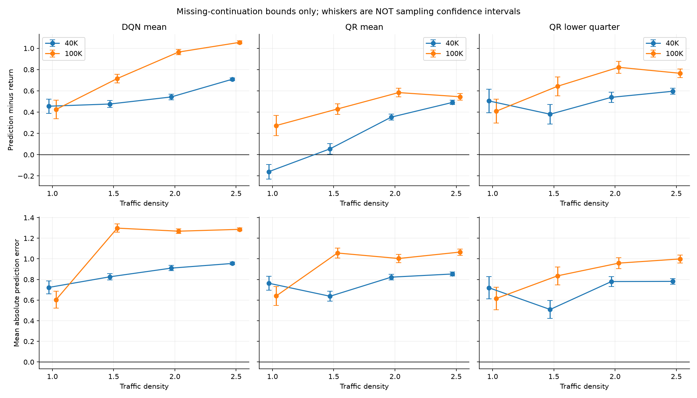
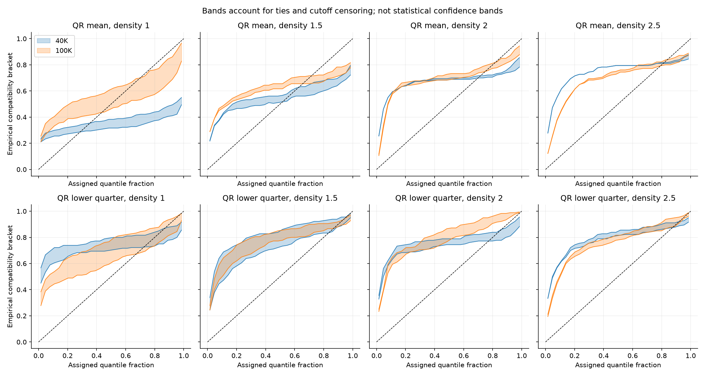

DEEP RL / DEVELOPMENT PREDICTION AUDIT
Interactive decision viewer · Frozen driving-performance study · Raw summaries · Recorded diagnostic design
40K and 100K models predict the return of their initial chosen action, then drive under the stated rule. Each policy/budget/density uses three models and 60 shared development scenarios per model. Seeds 19000–19059 are development data. No further confirmation seeds are consumed.
Different policies can choose different actions and create different outcomes. This is an audit of forecasts under their deployed behavior, not a fixed-target test isolating predictor quality. QR-tail deployment also differs from the mean-based continuation rule used in training.
Positive signed error means optimism. Absolute errors avoid cancellation between overestimates and underestimates. A crash gives an exact return; the 30-second recording cutoff leaves a bounded unknown future. Whiskers bound that missing continuation, not statistical uncertainty.

Longer training does not uniformly improve prediction quality. At density 2, cautious QR absolute-error bounds change from [0.733, 0.827] at 40K to [0.906, 1.012] at 100K. In normal traffic, QR mean's empirical compatibility gap decreases from 0.196 to 0.074.
These are descriptive results on this diagnostic block. Better driving performance and more accurate predictions are separate properties. Missing-continuation bounds do not provide a population confidence interval, and changing a policy also changes what it experiences.
| Policy | Steps | Density | Signed bias bounds | Absolute error bounds | Censored | Collisions |
|---|---|---|---|---|---|---|
| DQN mean | 40000 | 1.0 | [0.389, 0.522] | [0.66, 0.786] | 52.2% | 47.8% |
| DQN mean | 40000 | 1.5 | [0.443, 0.509] | [0.794, 0.858] | 26.1% | 73.9% |
| DQN mean | 40000 | 2.0 | [0.516, 0.569] | [0.884, 0.936] | 20.6% | 79.4% |
| DQN mean | 40000 | 2.5 | [0.697, 0.722] | [0.943, 0.968] | 10.0% | 90.0% |
| QR mean | 40000 | 1.0 | [-0.228, -0.091] | [0.697, 0.83] | 53.9% | 46.1% |
| QR mean | 40000 | 1.5 | [0.005, 0.105] | [0.589, 0.686] | 39.4% | 60.6% |
| QR mean | 40000 | 2.0 | [0.324, 0.382] | [0.794, 0.851] | 22.8% | 77.2% |
| QR mean | 40000 | 2.5 | [0.471, 0.512] | [0.833, 0.874] | 16.1% | 83.9% |
| QR lower quarter | 40000 | 1.0 | [0.394, 0.616] | [0.611, 0.828] | 87.2% | 12.8% |
| QR lower quarter | 40000 | 1.5 | [0.289, 0.471] | [0.422, 0.596] | 71.7% | 28.3% |
| QR lower quarter | 40000 | 2.0 | [0.49, 0.588] | [0.733, 0.827] | 38.3% | 61.7% |
| QR lower quarter | 40000 | 2.5 | [0.568, 0.624] | [0.755, 0.809] | 22.2% | 77.8% |
| DQN mean | 100000 | 1.0 | [0.337, 0.513] | [0.521, 0.687] | 69.4% | 30.6% |
| DQN mean | 100000 | 1.5 | [0.675, 0.757] | [1.258, 1.339] | 32.2% | 67.8% |
| DQN mean | 100000 | 2.0 | [0.941, 0.989] | [1.245, 1.292] | 18.9% | 81.1% |
| DQN mean | 100000 | 2.5 | [1.043, 1.07] | [1.273, 1.3] | 10.6% | 89.4% |
| QR mean | 100000 | 1.0 | [0.178, 0.369] | [0.549, 0.731] | 75.0% | 25.0% |
| QR mean | 100000 | 1.5 | [0.379, 0.48] | [1.008, 1.106] | 39.4% | 60.6% |
| QR mean | 100000 | 2.0 | [0.543, 0.624] | [0.964, 1.043] | 31.7% | 68.3% |
| QR mean | 100000 | 2.5 | [0.514, 0.576] | [1.035, 1.096] | 24.4% | 75.6% |
| QR lower quarter | 100000 | 1.0 | [0.296, 0.521] | [0.508, 0.723] | 88.3% | 11.7% |
| QR lower quarter | 100000 | 1.5 | [0.554, 0.732] | [0.749, 0.922] | 70.0% | 30.0% |
| QR lower quarter | 100000 | 2.0 | [0.765, 0.878] | [0.906, 1.012] | 44.4% | 55.6% |
| QR lower quarter | 100000 | 2.5 | [0.725, 0.805] | [0.96, 1.038] | 31.7% | 68.3% |
The dashed line is the assigned quantile fraction. Bands show which empirical coverage values are compatible with ties and unobserved continuation. They are not sampling confidence bands. Raw quantile heads are not sorted here, so crossings remain visible. Good marginal agreement does not establish accurate conditional forecasts in every state.

| Policy | Steps | Density | Minimum compatibility gap | Adjacent crossings |
|---|---|---|---|---|
| QR mean | 40000 | 1.0 | 0.196 | 8.3% |
| QR mean | 40000 | 1.5 | 0.145 | 3.3% |
| QR mean | 40000 | 2.0 | 0.228 | 1.8% |
| QR mean | 40000 | 2.5 | 0.271 | 1.4% |
| QR lower quarter | 40000 | 1.0 | 0.225 | 11.7% |
| QR lower quarter | 40000 | 1.5 | 0.206 | 6.4% |
| QR lower quarter | 40000 | 2.0 | 0.240 | 4.0% |
| QR lower quarter | 40000 | 2.5 | 0.279 | 3.1% |
| QR mean | 100000 | 1.0 | 0.074 | 0.1% |
| QR mean | 100000 | 1.5 | 0.178 | 0.0% |
| QR mean | 100000 | 2.0 | 0.196 | 0.0% |
| QR mean | 100000 | 2.5 | 0.203 | 0.0% |
| QR lower quarter | 100000 | 1.0 | 0.129 | 0.3% |
| QR lower quarter | 100000 | 1.5 | 0.234 | 0.1% |
| QR lower quarter | 100000 | 2.0 | 0.257 | 0.1% |
| QR lower quarter | 100000 | 2.5 | 0.240 | 0.1% |
DQN supplies one mean estimate, so no quantile-distribution test is invented for it. Small mean bias can hide large individual errors. These comparisons do not establish why a policy crashed or guarantee safe driving.
python run_prediction_audit.py --jobs 4 validates and reuses saved data. --report-only rebuilds this page. No model training, risk-level selection, or speed-cap tuning occurs.